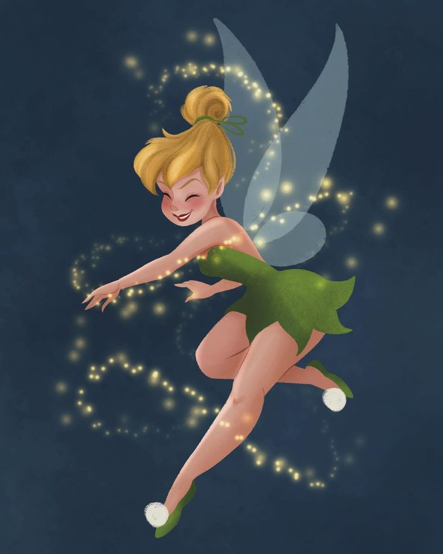

minha biblioteca
Sininho é transportada pelo vento para a Terra do Nunca e aprende que, como uma fada, seu trabalho é consertar coisas quebradas. Ela conhece outras fadas e percebe que não voltará à terra principal para ajudar a trazer a primavera.